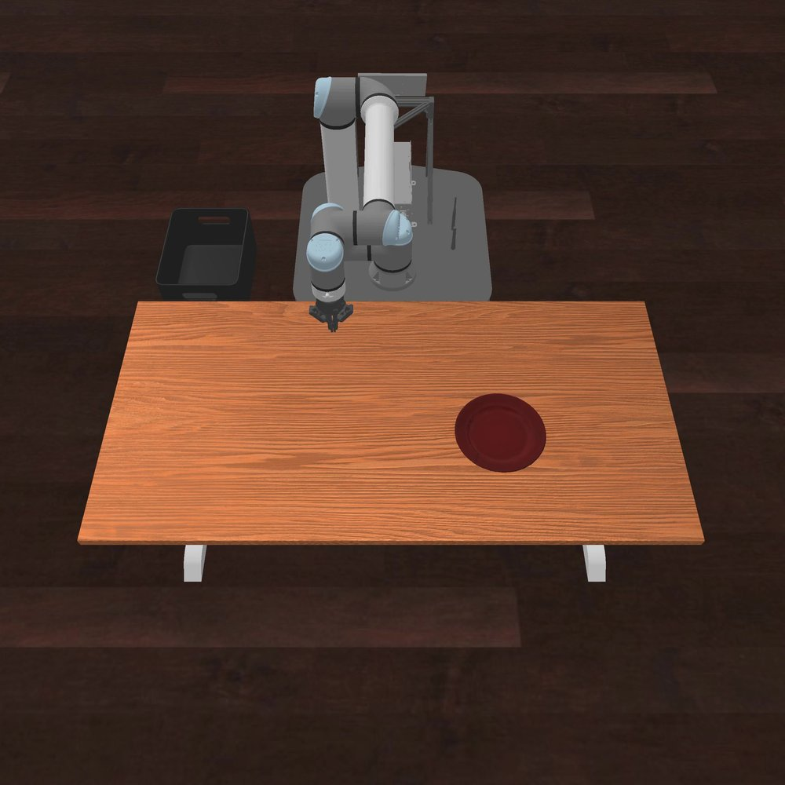
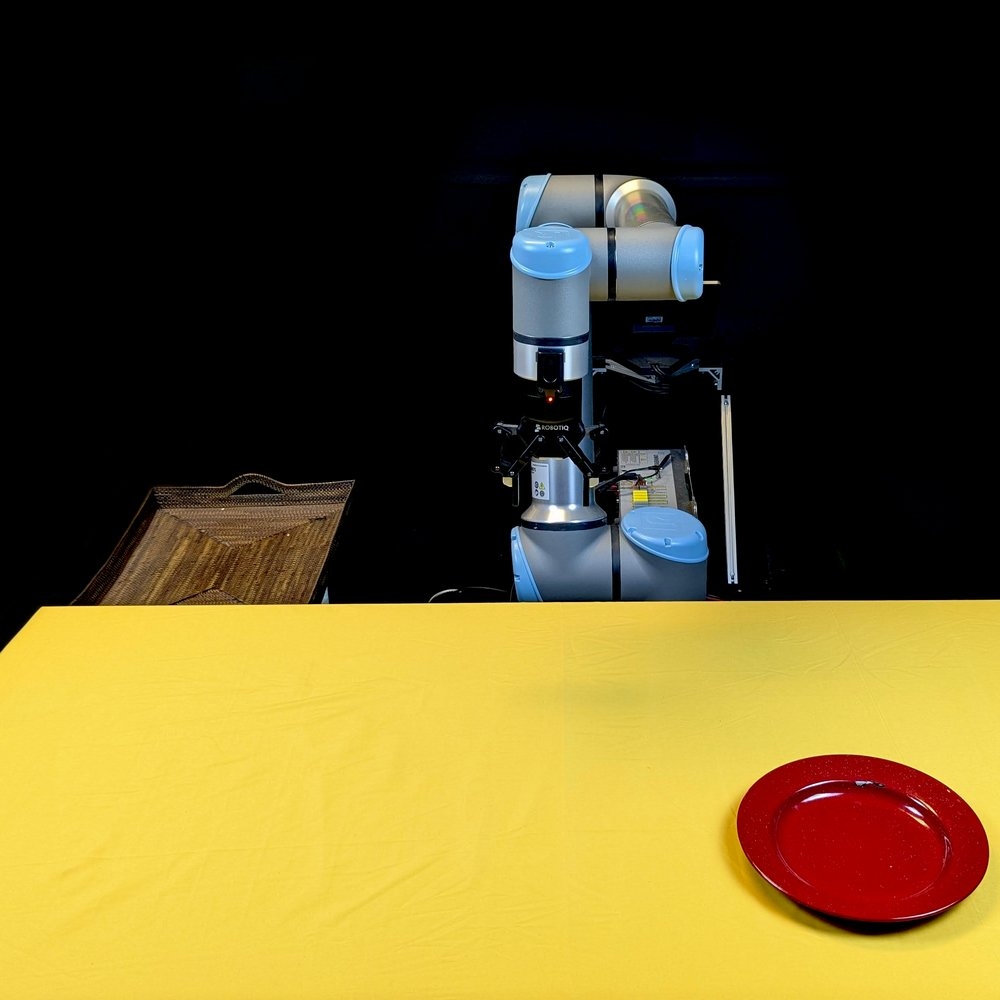
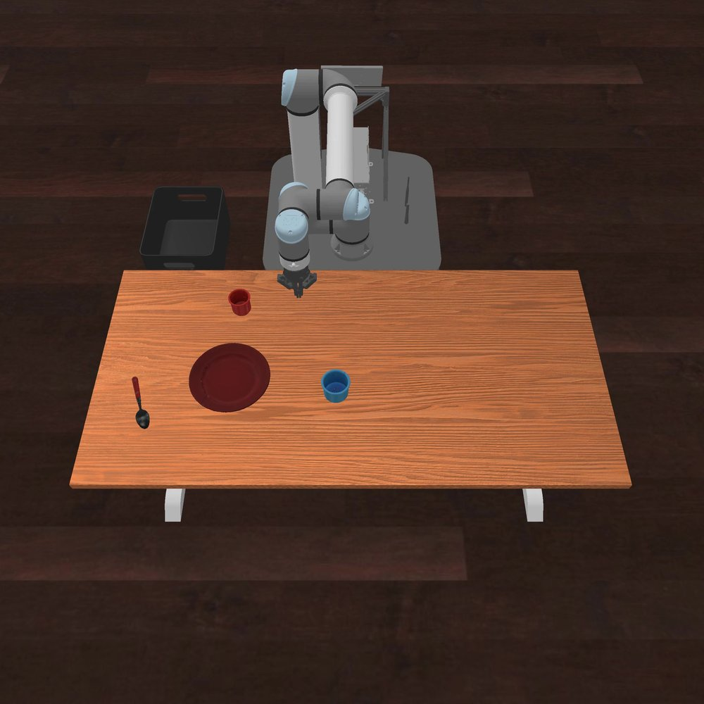
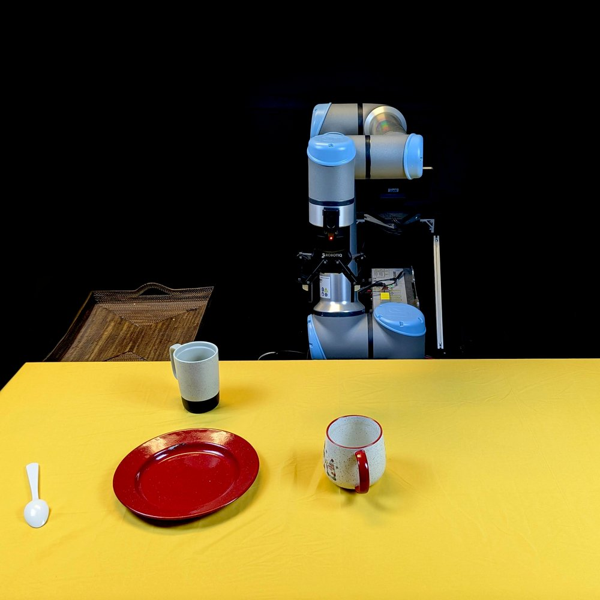
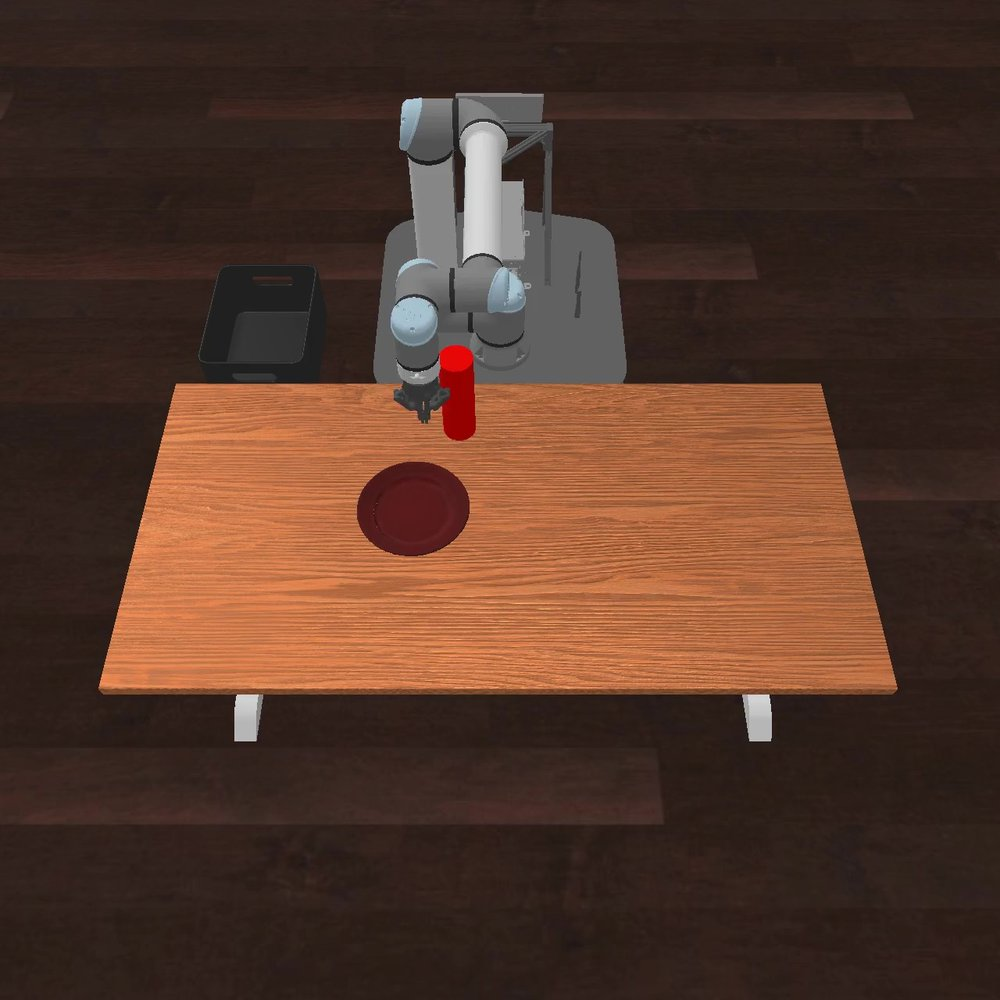
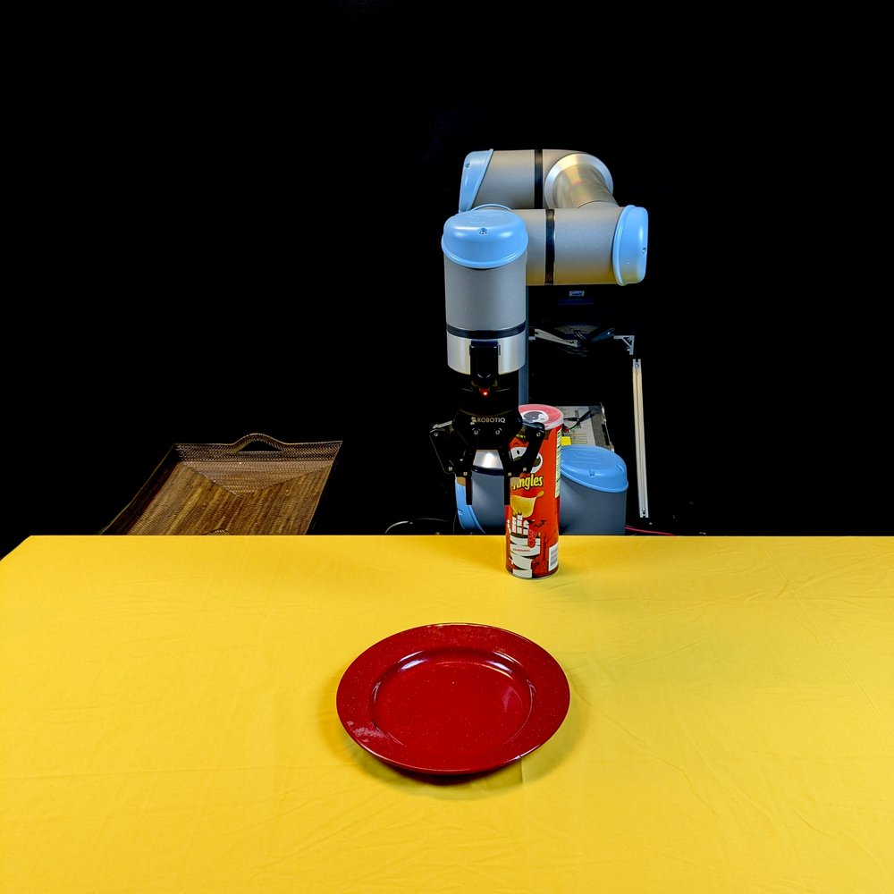
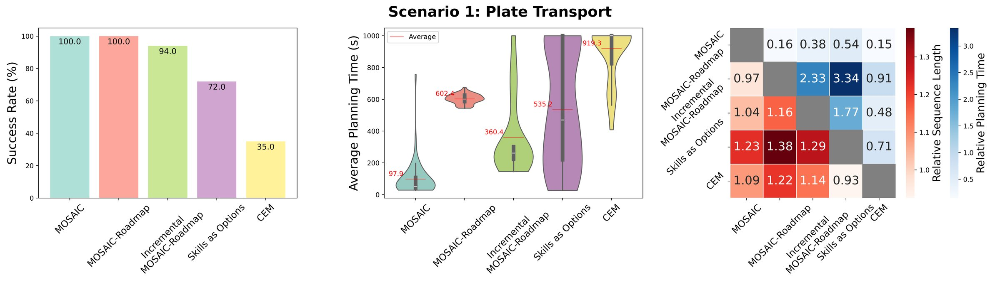
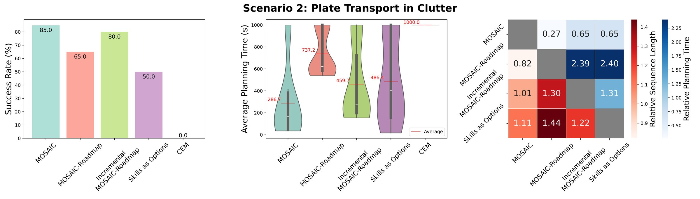
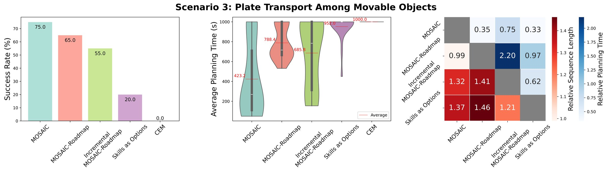

Planning long-horizon manipulation motions using a set of predefined skills is a central challenge in robotics; solving it efficiently could enable general-purpose robots to tackle novel tasks by flexibly composing generic skills. Solutions to this problem lie in an infinitely vast space of parameterized skill sequences, a space where common incremental methods struggle to find sequences that have non-obvious intermediate steps. Some approaches reason over lower-dimensional, symbolic spaces, which are more tractable to explore but may be brittle and are laborious to construct.
In this work, we introduce MOSAIC, a skill-centric, multi-directional planning approach that targets these challenges by reasoning about which skills to employ and where they are most likely to succeed, by utilizing physics simulation to estimate skill execution outcomes. Specifically, MOSAIC employs two complementary skill families: Generators, which identify “islands of competence” where skills are demonstrably effective, and Connectors, which link these skill-trajectories by solving boundary value problems. By focusing planning efforts on regions of high competence, MOSAIC efficiently discovers physically-grounded solutions. We demonstrate its efficacy on complex long-horizon problems in both simulation and the real world, using a diverse set of skills including generative diffusion models, motion planning algorithms, and manipulation-specific models.
The plate must reach the bin without disturbing the objects around it.
The scene is perceived, planned in simulation, and executed on the real arm.
The chips can has to be moved to make room for manipulating the plate.
The plate is pushed to the table's edge so it can be picked up.
In every scenario the robot must place the plate into the bin. Each pair shows the real setup and its simulated counterpart.


The plate must be pushed to the edge before it can be picked up.


The plate must reach the edge without displacing other objects.


Space must first be cleared by moving the chips can.
Left: success rates. Middle: planning-time density with median, IQR and mean. Right: head-to-head on problems both planners solved: the upper triangle shows relative planning time, the lower triangle relative sequence length, each comparing the row planner to the column planner.



@inproceedings{mishani2026mosaic,
title = {{MOSAIC}: Skill-Centric Manipulation Planning with Physics Simulation},
author = {Mishani, Itamar and Shaoul, Yorai and Likhachev, Maxim},
booktitle = {IEEE International Conference on Robotics and Automation (ICRA)},
year = {2026}
}